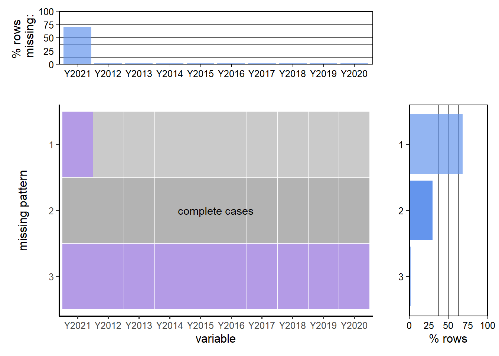

2.1.1 Share of Modern Renewables in Total Final Energy Consumption (%):
It is downloaded from the website of the International Energy Agency (IEA). It contains over 275 countries and defined regional groupings from 1990 to 2021. This database is updated annually, and the last update was on 09/15/2023. However, the most recent year with complete data recorded is 2020. A few small countries do not contain relevant data, and their share was 0 in the dataset. We decided to exclude countries with empty data and import the rest of the dataset to show the disparity of developing renewable energy by detailed breakdown across countries and regions over the years.
It is downloaded from IEA. It contains time series data of supply energy investment, including detailed breakdowns in fossil fuels, renewables, electricity networks, and other supplies, across different countries and regions from 2015 to 2023. This dataset is updated annually, and the last update was on 5/25/2023. For our project, we will divide renewable energy by total energy in 2020 to create a column as a share of renewable energy investment proportion, to discover any effect on the share of renewable energy usage. No missing value is in selected columns.
It is downloaded from IEA. It contains time series data of subsidies to 4 fossil fuels, average subsidy rate, subsidy per capita, and total subsidy as a share of GDP across 55 countries in 2023. This dataset is updated annually, and the last update was on 10/24/2023. We decided to focus on the total subsidy column in 2020, and later divide it by GDP to create the feature, subsidy as a share of total GDP, to detect any influence on the share of modern renewables in corresponding countries in 2020. No missing value is in this column.
It is downloaded from IEA. It contains time series data of the percentage of the population who get access to electricity across different countries and regions. This dataset is updated annually, and the last update was on 9/15/2023. While many countries have >99% access in 2022, the Democratic Republic of the Congo only has 9%. Since it does not contain data in 2020, only data in 2015 and 2022 as nearby years, and the difference is negligible in almost all countries, we will import 2022 data to represent the situation in 2020, and discover any relationship to the share of modern renewables.
It is downloaded from the website of the World Bank. It contains GDP per capita of 269 countries and defined regions from 1960 to 2022. This dataset is updated annually. Some countries like DPRK do not have data, and we will only import data of countries that have corresponding entries in the renewable energy share dataset, to find any relationship contributing to the share.
The project comprises two main parts. In the first part, we aim to analyze the distribution of renewable energy usage across various countries and regions. This will be conducted on the Share of Modern Renewables in the Total Final Energy Consumption dataset. Initially, we will create a Cleveland dot plot to compare the renewable energy share of all listed countries, identifying if there are commonalities among those with high and low rankings. The dataset also includes entries for the World, Developed Regions, Developing Regions, and specific areas like Sub-Saharan Africa, Northern Europe, and Western Asia, which facilitates the creation of bar charts to depict disparities as of 2020. Besides, we plan to use time series graphs to track changes in renewable energy use from 2010 to 2020 in the selected regions.
In examining the resource curse hypothesis, we will focus on countries rich in natural resources but plagued by corruption and conflicts, such as certain nations in Sub-Saharan Africa and Latin America. By comparing these with the rest of the world through Cleveland dot plots or bar charts, we try to uncover evidence of the resource curse in these areas.
The second part of the project delves into the causes behind disparities in renewable energy usage, particularly between developed and developing countries. We’ll start by analyzing the correlation between GDP per capita and renewable energy share through scatter plots, assessing the influence of economic development on renewable energy share. Additional scatter plots will explore the relationship between renewable energy share and investment in renewables, as well as the impact of technology efficiency and fossil fuel subsidies on renewable energy development. We will test the hypothesis that countries with high investment, high efficiency, and low subsidies on traditional fossil fuels have higher motivation to develop renewable energy and hence have a higher share. Finally, to assess the influence of infrastructure on renewable energy development, since the electricity access dataset contains many countries with access >99%, we can code electricity access and share of renewable energy into 5 categories: VeryHigh, High, Med, Low, ExtLow, and plot the heatmap to show the relationship.
What should be noted is that since the most recent year with complete data in the renewable energy share dataset is 2020, we will only conduct analysis on data in 2020 from other datasets (except for time-series analysis).
2.3 Missing value analysis
Our analysis is mainly dependent on the renewable energy share dataset.
# missing pattern by rowsrowNA =rowSums(is.na(data))rowNA = rowNA[rowNA >1]sort(rowNA, decreasing=TRUE)
South Sudan Montenegro French Guiana Guadeloupe Martinique
23 16 11 11 11
Mayotte Réunion Suriname Cambodia Eritrea
11 11 11 6 3
Namibia
2
By observing missing values by column and row, it can be noticed that data in 2021 has a lot of missing values (that is why we analyze on data in 2020). Besides, by looking into countries and regions with missing values greater than 1, we find that values of those entries are either missing in early times or in recent years. To be more specific, Montenegro does not have records from 1990 to 2004 and Guadeloupe does not have records from 2011 to 2021.
Then, we draw the heatmap to get more insights. However, since there are 275 entries in the dataset, which cannot be fully presented in the graph, we choose to group countries and regions into different groups.
It can be seen that missing data in 2021 is the most significant pattern. Besides insights of missing data, we notice that there exists some pattern for the renewable energy proportion, which will be discussed in the future analysis.
Finally, we draw the pattern of those missing values.
Scale for y is already present.
Adding another scale for y, which will replace the existing scale.
Scale for y is already present.
Adding another scale for y, which will replace the existing scale.

Due to the limitation of the graph size and our focus on recent trends, we plot the pattern of missing values from 2012 to 2021. There are mainly three patterns. First, nearly 65% of countries and regions do not have records for 2021. Second, 30% of them do not have missing data for the 10-year period. Third, a small proportion of them does not have any record during the period.
For analysis other than the time-series one, we focus on year 2020 in the renewable energy share dataset, as well as other datasets. There are five countries or regions that have missing values in that year, and will be removed from the subsequent analysis. For other datasets we use, since we only extract a specific column from them, there is no missing value. However, when merging those datasets with the renewable energy share dataset, there can be cases that some countries do not exists in all of them. When situations like this occurs, those countries or regions in that specific analysis will be removed.
2.4 Limitations
There exists several limitations in our data. First, the reference of countries/regions may be inconsistent in different datasets. Since there are many methods of classifying countries into groups, it is hard to compare those groups due to their inclusion relationship. For example, United States can be classified into North America (region) and Developed Countries (economics) at the same time. Therefore, it is time-consuming to classify hundreds of countries based on a unified standard. Moreover, representation of country names can also be different, which requires manual work to convert them into the same representation. For example, United Kingdom is also referred to as United Kingdom of Great Britain and Northern Ireland. After searching a lot of online resources, we derived a relatively common method of classifying countries in terms of their economic, regional, and political information. Detailed steps of data preprocessing can be found in data/preprocess.qmd and data.qmd.
The second limitation is that some datasets do not have records in 2020. Since the focus of our analysis is on data in 2020, we need to use data in years near 2020 as an approximation, which may deviate from their true values.